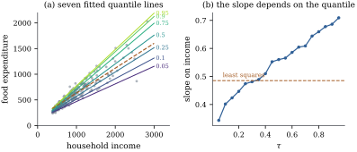

45.2 Quantile regression
Least squares answers a question about a loss function: which constant minimizes expected squared error? Change the loss and the answer changes. The median minimizes expected absolute error, and one modification of absolute error — weighting the two sides differently — picks out any quantile at all. Koenker and Bassett (1978) built a regression method on that observation.
45.2.1. The check loss
For
a convex, piecewise linear, nonnegative function with
a kink at the origin, equal to
The subscript
45.2.2. What the check loss estimates
Let
(a) Population characterization.
Consequently the set of minimizers of
(b) Linear program. Writing
a linear program in
(c) Equivariance of the estimate. Let
(d) Equivariance under monotone maps. For strictly increasing left-continuous
Proof.
(a) Split the loss at the kink:
(b) For any
(c) For
(d) This is Lemma 45.1.1 applied conditionally on
Part (a) is the whole justification of the method,
and it needs remarkably little: no density, no moments
beyond the first, no continuity. Part (d) is a property
least squares does not have: the median of
Remark (The influence of one
observation). Away from the kink
Remark (Without moments).
Minimizing
45.2.3. Solving the problem
Let
(a) There is a minimizer whose residual vector vanishes at
(b) If
Proof.
(a) Let
(b) Let
Part (b) says the fitted surface has about
Fitting Eq. 45.2.4 at
seven levels gives slopes rising steadily with
| 0.05 | 0.10 | 0.25 | 0.50 | 0.75 | 0.90 | 0.95 | |
|---|---|---|---|---|---|---|---|
| slope | 0.3434 | 0.4018 | 0.4741 | 0.5602 | 0.6440 | 0.6863 | 0.7091 |
| intercept | 124.9 | 110.1 | 95.5 | 81.5 | 62.4 | 67.4 | 64.1 |
The least squares slope,
import numpy as np
import statsmodels.api as sm
from scipy.optimize import linprog
data = sm.datasets.engel.load_pandas().data
TAUS = (0.05, 0.10, 0.25, 0.50, 0.75, 0.90, 0.95)
income = data["income"].to_numpy()
food = data["foodexp"].to_numpy()
n = len(food)
X = np.column_stack([np.ones(n), income])
def check_loss(u, tau):
"""The check function rho_tau applied elementwise."""
return u * (tau - (u < 0))
def qreg(X, y, tau):
"""Quantile regression by linear programming.
Variables are (b+, b-, u, v), all nonnegative, with beta = b+ - b- and
u - v = y - X beta the positive and negative parts of the residual.
"""
n, p = X.shape
cost = np.concatenate([np.zeros(2 * p), tau * np.ones(n), (1 - tau) * np.ones(n)])
A = np.hstack([X, -X, np.eye(n), -np.eye(n)])
out = linprog(cost, A_eq=A, b_eq=y, bounds=(0, None), method="highs")
return out.x[:p] - out.x[p:2 * p]
beta = {tau: qreg(X, food, tau) for tau in TAUS}
for tau in (0.10, 0.50, 0.90):
print(f"tau = {tau:.2f}: intercept {beta[tau][0]:8.2f} slope {beta[tau][1]:.4f}")for tau in TAUS:
r = food - X @ beta[tau]
n_zero = np.sum(np.abs(r) < 1e-8)
n_neg = np.sum(r < -1e-8)
assert n_zero == X.shape[1] # p residuals vanish exactly
assert n_neg <= tau * n <= n_neg + n_zero # the counting identity
print("at every tau: 2 residuals are zero and #negative <= tau*n <= #negative + 2")
Koenker and Machado (1999) proposed the analogue of
45.2.4. Reading a coefficient
The coefficient
Remark (Quantiles of distributions, not of
people). Suppose incomes rise by one franc for
every household. The
Two cautions carry over: extrapolation is as unsafe
as in Section
12.3, and Section
45.3 shows it is the first place quantile curves
misbehave; and linearity of
45.2.5. Exercises
A. Check your understanding
A quantile regression with an intercept and one
regressor is fitted at
Solution. Generic data give
B. Practice
Take
Solution. Apply Theorem 45.2.1(a)
to the empirical distribution
Write down the dual of the linear program Eq. 45.2.4 and
show that it is
C. Going deeper
Show that the set of minimizers of